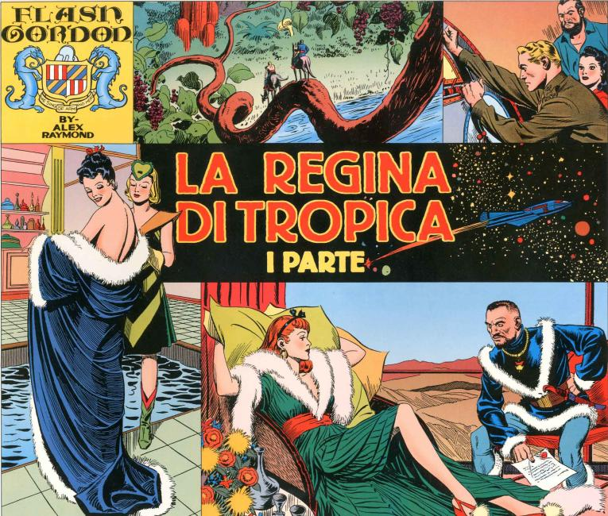
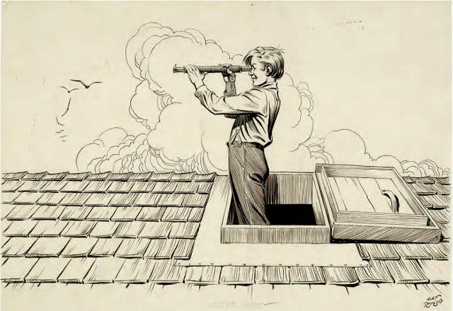

Alexander Gillespie "Alex" Raymond (October 2, 1909 – September 6, 1956) was an American cartoonist, best known for creating Flash Gordon for King Features in 1934. The strip was subsequently adapted into many other media, from a series of movie serials (1936–1940) to a 1970s television series and a 1980 film.
Raymond's father encouraged his love of drawing from an early age, leading him to become an assistant illustrator in the early 1930s on strips such as Tillie the Toiler and Tim Tyler's Luck. Towards the end of 1933, Raymond created the epic Flash Gordon science-fiction comic strip to compete with the popular Buck Rogers comic strip and, before long, Flash was the more popular strip of the two. Raymond also worked on the jungle adventure saga Jungle Jim and spy adventure Secret Agent X-9 concurrently with Flash, though his increasing workload caused him to leave Secret Agent X-9 to another artist by 1935. He left the strips in 1944 to join the Marines, saw combat in the Pacific Ocean theater in 1945 and was demobilized in 1946. Upon his return from serving during World War II, Raymond created and illustrated the much-heralded Rip Kirby, a private detective comic strip. In 1956, Raymond was killed in a car crash at the age of 46.
He became known as "the artist's artist" and his much-imitated style can be seen on the many strips he illustrated. Raymond worked from live models furnished by Manhattan's Walter Thornton Agency, as indicated in "Modern Jules Verne," a profile of Raymond published in the Dell Four-Color Flash Gordon #10 (1942), showing how Thornton model Patricia Quinn posed as a character in the strip.
Numerous artists have cited Raymond as an inspiration for their work, including comic artists Jack Kirby, Bob Kane, Russ Manning, and Al Williamson. George Lucas cited Raymond as a major influence for Star Wars. He was inducted into the Will Eisner Comic Book Hall of Fame in 1996. Maurice Horn stated that Raymond unquestionably possessed "the most versatile talent" of all the comic strip creators. He has also described his style as "precise, clear, and incisive." Carl Barks described Raymond as a man "who could combine craftsmanship with emotions and all the gimmicks that went into a good adventure strip." Raymond's influence on other cartoonists was considerable during his lifetime and did not diminish after his death.
 